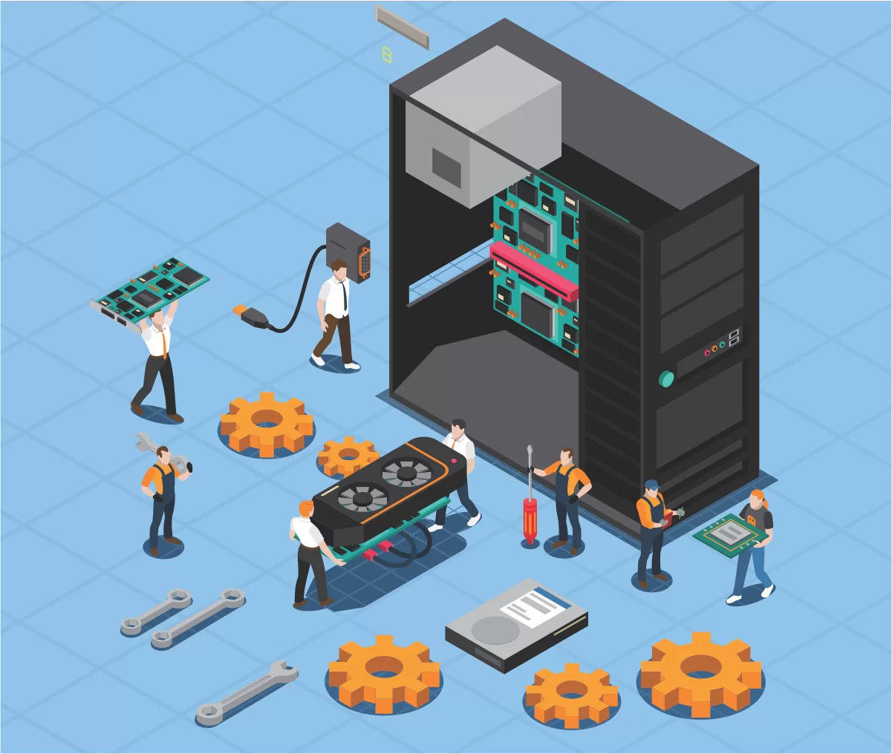
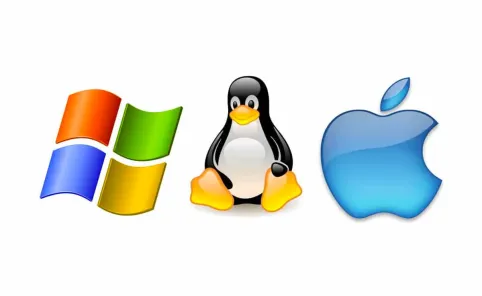

Bienvenidos a Nuestros Servicios
-
Nuestros servicios de soporte técnico de computadores está diseñado para ofrecer soluciones rápidas y efectivas a todas tus necesidades tecnológicas. Nos especializamos en resolver problemas tanto de hardware como de software, proporcionando asistencia experta y personalizada para asegurar el óptimo funcionamiento de tus equipos.
¿Qué incluye nuestro servicio?
- Reparación de Hardware y Software
- Instalación y Configuración de Sistemas Operativos
- Eliminación de Virus y Malware
- Mantenimiento Preventivo
- Recuperación de Datos
- Asesoramiento y Consultoría Técnica
Servicios
- Reparación de Hardware y Software:
En nuestro servicio de reparación de hardware y software, nos especializamos en resolver una amplia gama de problemas que pueden afectar el rendimiento y la funcionalidad de tus dispositivos informáticos. Desde problemas físicos con componentes internos hasta errores de software que afectan la operatividad, nuestro equipo técnico está capacitado para ofrecer soluciones rápidas y efectivas.

¿Qué incluye nuestra reparación de hardware y software?
- Diagnóstico Preciso: Realizamos un análisis detallado para identificar tanto fallos de hardware como errores de software que puedan estar afectando el funcionamiento de tu equipo.
- Reparación de Hardware: Nos ocupamos de la sustitución o reparación de componentes dañados como placas madre, discos duros, memorias RAM, tarjetas gráficas, entre otros. Aseguramos que tu equipo recupere su funcionalidad óptima.
- Solución de Problemas de Software: Abordamos errores de sistema operativo, conflictos de software, malware y virus. Realizamos reinstalaciones y configuraciones para garantizar un sistema estable y seguro.
- Actualización y Mantenimiento: Implementamos actualizaciones de software y firmware para mejorar el rendimiento y la seguridad de tu equipo. También ofrecemos mantenimiento preventivo para evitar problemas futuros.
- Recuperación de Datos: En caso de pérdida de datos, empleamos técnicas avanzadas para recuperar información crítica y aseguramos la integridad de tus archivos.
- Instalación y Configuración de Sistemas Operativos:
Nuestro servicio de instalación y configuración de sistemas operativos está diseñado para asegurar que tus dispositivos informáticos funcionen de manera óptima y cumplan con tus necesidades específicas. Desde la instalación inicial hasta la configuración avanzada, nuestro equipo técnico se encarga de proporcionarte una experiencia sin complicaciones.
 ¿Qué incluye nuestra instalación y configuración de sistemas operativos?- Instalación Profesional: Realizamos la instalación de sistemas operativos como Windows, macOS, Linux y otros, asegurando que el proceso se lleve a cabo de manera adecuada y sin errores.
- Configuración Personalizada: Adaptamos la configuración del sistema operativo según tus preferencias y requisitos. Esto incluye ajustes de idioma, zonas horarias, configuración de red, y más.
- Actualizaciones y Parches: Aplicamos las últimas actualizaciones de seguridad y parches de software para garantizar la estabilidad y la protección contra vulnerabilidades conocidas.
- Optimización de Rendimiento: Ajustamos la configuración del sistema operativo para maximizar el rendimiento de tus dispositivos, mejorando la velocidad de respuesta y la eficiencia del hardware.
- Asistencia Post-Instalación: Estamos disponibles para resolver cualquier problema que puedas tener después de la instalación inicial, proporcionando soporte técnico continuo según sea necesario.
- Eliminación de Virus y Malware:
Nuestro servicio de eliminación de virus y malware está diseñado para proteger y restaurar la integridad de tus sistemas informáticos, eliminando amenazas que puedan comprometer la seguridad y el rendimiento de tus dispositivos.
¿Qué incluye nuestra eliminación de virus y malware?
- Análisis Exhaustivo: Realizamos un análisis profundo de tu sistema para detectar y identificar cualquier tipo de virus, malware, spyware, adware y otras amenazas potenciales.
- Eliminación Efectiva: Empleamos herramientas y técnicas avanzadas para eliminar completamente los programas maliciosos de tu sistema, asegurando que todas las amenazas sean erradicadas de manera efectiva.
- Restauración del Sistema: Donde sea posible, restauramos la configuración y los archivos afectados por los virus y malware para devolver el sistema a su estado operativo normal.
- Optimización de la Seguridad: Configuramos medidas adicionales de seguridad, como software antivirus y firewalls, para prevenir futuros ataques y proteger tus datos contra amenazas cibernéticas.
- Educación y Asesoramiento: Proporcionamos orientación sobre buenas prácticas de seguridad cibernética para ayudarte a mantener tus dispositivos protegidos en el futuro.
- Mantenimiento Preventivo:
Nuestro servicio de mantenimiento preventivo está diseñado para anticipar y mitigar problemas potenciales en tus sistemas informáticos antes de que se conviertan en problemas graves. Implementamos una serie de procedimientos y controles para mantener tus equipos en óptimas condiciones de funcionamiento y prolongar su vida útil.
 ¿Qué incluye nuestro servicio de mantenimiento preventivo?
¿Qué incluye nuestro servicio de mantenimiento preventivo?
- Limpieza Física: Realizamos la limpieza física de hardware, incluyendo ventiladores, teclados, y otras partes vulnerables a la acumulación de polvo y suciedad que pueden afectar el rendimiento.
- Actualización de Software: Aplicamos las últimas actualizaciones de software y parches de seguridad para mantener el sistema operativo y las aplicaciones actualizadas y protegidas contra vulnerabilidades conocidas.
- Optimización de Rendimiento: Evaluamos el rendimiento del sistema y ajustamos la configuración para mejorar la velocidad de respuesta y la eficiencia operativa.
- Respaldo y Recuperación de Datos: Configuramos y verificamos los sistemas de respaldo para asegurar que tus datos estén protegidos y se puedan recuperar en caso de una falla del sistema.
- Revisión de Seguridad: Realizamos auditorías de seguridad periódicas para identificar y corregir posibles brechas de seguridad antes de que se conviertan en problemas mayores.
- Recuperación de Datos:
Nuestro servicio de recuperación de datos está diseñado para ayudarte a recuperar información crítica que haya sido perdida o dañada en tus dispositivos de almacenamiento, como discos duros, unidades flash, y otros medios de almacenamiento digital. ¿Qué incluye nuestro servicio de recuperación de datos?
- Evaluación y Diagnóstico: Realizamos una evaluación exhaustiva para determinar la causa y el alcance de la pérdida de datos, utilizando herramientas avanzadas para diagnosticar problemas físicos y lógicos.
- Recuperación Personalizada: Utilizamos técnicas especializadas y software avanzado para recuperar datos de manera segura y eficiente, adaptando el proceso a las necesidades específicas de cada situación.
- Restauración Completa: Trabajamos para recuperar todos los tipos de archivos, incluyendo documentos, fotos, videos, bases de datos y otros archivos importantes que puedan haber sido perdidos.
- Seguridad y Confidencialidad: Mantenemos altos estándares de seguridad y confidencialidad durante todo el proceso de recuperación, asegurando la integridad y privacidad de tus datos recuperados.
- Asesoramiento Post Recuperación: Proporcionamos orientación sobre medidas preventivas y estrategias de respaldo para evitar futuras pérdidas de datos y mantener la seguridad de la información.
- Asesoramiento y Consultoría Técnica:
Nuestro servicio de asesoramiento y consultoría técnica está diseñado para ayudarte a optimizar y mejorar el rendimiento de tus sistemas informáticos, asegurando que aproveches al máximo tus recursos tecnológicos. Nos especializamos en ofrecer soluciones personalizadas que se adaptan a las necesidades específicas de tu negocio o proyecto.
 ¿Qué incluye nuestro servicio de Asesoramiento y Consultoría Técnica?
¿Qué incluye nuestro servicio de Asesoramiento y Consultoría Técnica?
- Análisis y Evaluación: Realizamos un análisis exhaustivo de tus sistemas existentes para identificar áreas de mejora y oportunidades de optimización. Evaluamos tanto el hardware como el software utilizados para determinar su eficiencia y adecuación a tus necesidades actuales y futuras.
- Planificación Estratégica: Desarrollamos estrategias tecnológicas personalizadas que alineen tus objetivos comerciales con soluciones tecnológicas eficientes. Esto incluye recomendaciones sobre infraestructura de TI, actualizaciones de software, y políticas de seguridad informática.
- Implementación y Soporte: Ayudamos en la implementación de nuevas soluciones tecnológicas y proporcionamos soporte continuo para asegurar una transición suave y minimizar cualquier interrupción operativa. Nuestro equipo técnico está disponible para responder a tus preguntas y resolver cualquier problema técnico que pueda surgir.
- Seguridad y Cumplimiento Normativo: Nos aseguramos de que tus sistemas cumplan con las mejores prácticas de seguridad cibernética y regulaciones vigentes, protegiendo así la integridad y confidencialidad de tus datos críticos.
- Formación y Capacitación: Ofrecemos formación especializada para tu equipo, proporcionando los conocimientos necesarios para gestionar eficazmente tus sistemas y maximizar su rendimiento.
Contactos
-
Si necesita ayuda, no dude en contactarnos. Estamos disponibles de lunes a viernes de 08:00AM a 06:00PM
Teléfonos: 300 000 0000 - 200 000 0000 WhatsApp: 300 000 0000 Email: soporte@solucionespda.com